| Integrante | Papel | RM |
|---|---|---|
| Tayná Esteves | Product Owner & Pesquisadora | RM562491 |
| João | Engenheiro de IA | RM565999 |
| Endrew Alves | Dev Full-Stack | RM563646 |
| Carlos Eduardo | Tech Lead & Documentador | RM566487 |
| Turma | 2º ano • 2TIAOA • 2026/1 — Graduação em Inteligência Artificial |
|---|---|
| Vídeo (YouTube, não listado) | https://youtu.be/2S1gYwfXBZM |
| Repositório GitHub (privado) | https://github.com/Carlos566487/GLOBAL_SOLUTION_2026_2 — pasta 2TIAO/GLOBAL-SOLUTION-2 |
| Professores | Tutor turma A: Caique Nonato da Silva Bezerra · Tutor turma R: Leonardo Ruiz Orabona · Coordenador: André Godoi Chiovato |
| ODS | ODS 3 — Saúde e Bem-Estar |
Quando a Anvisa publica um recolhimento de alimento, a rede de supermercados precisa responder rapidamente "quais lojas receberam esse lote?" e o consumidor precisa saber se o produto que tem em casa está afetado. Os alertas, porém, chegam em texto livre e descrevem o lote de quatro formas diferentes (lista de lotes, final do lote, data de fabricação limite ou todos os lotes). O Recall Seguro é uma prova de conceito em que um LLM (Google Gemini) extrai a regra de lote do texto oficial em JSON validado, um motor de regras determinístico cruza essa regra com os recebimentos das lojas e uma pessoa aprova cada ação. Para o cidadão, a API recebe a foto da embalagem e um leitor local de OCR e código de barras devolve em_recall, sem_recall ou verificacao_pendente, sem armazenar a foto; a interface do aplicativo ainda não foi concluída, e o fluxo foi validado pela API.
Em 15 recolhimentos reais nunca vistos pelo prompt, a regra de lote foi extraída corretamente em 25 de 26 registros (96%), sem nenhum falso "sem recall" e sem alucinações. O motor reproduziu os três cenários de demonstração e classificou corretamente 1.000 recebimentos simulados (mediana de 0,1 s em 10 execuções). Uma auditoria em 19/11 encontrou e corrigiu um falso negativo em recalls que abrangem uma categoria inteira de um fabricante. Nas 12 fotos reais, o leitor não cometeu nenhum erro confiante. A solução se relaciona ao ODS 3 — Saúde e Bem-Estar.
O grupo levantou 27 recolhimentos de alimentos por motivos sanitários publicados entre 01/01/2025 e 16/11/2026 em fontes oficiais (notícias da Anvisa, Prefeitura de São Paulo e resoluções publicadas no DOU/datalegis). Em cada caso, a informação que define o que deve sair da prateleira está em texto corrido, e o formato varia:
| Tipo de regra | Exemplo real | Comparação necessária |
|---|---|---|
lista | Ricota Fresca Vaidosa — lotes 148, 153, 166 e 167 (RE 2.905/2026, 24/07/2026) | lote ∈ lista |
data_corte | Sanibras — suplementos fabricados até 12/06/2026 | data de fabricação ≤ limite (inclusive) |
todos | Equaliv, Nutra — todos os lotes do produto | somente a identidade do produto |
sufixo | lotes terminados em um código (sem caso real; teste sintético) | lote termina com o sufixo |
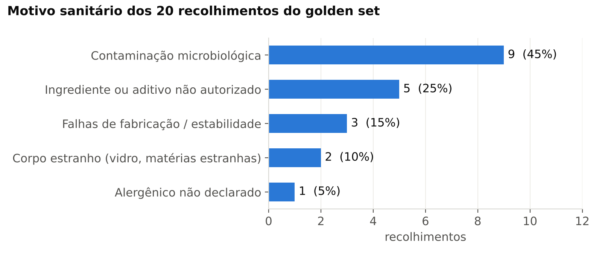
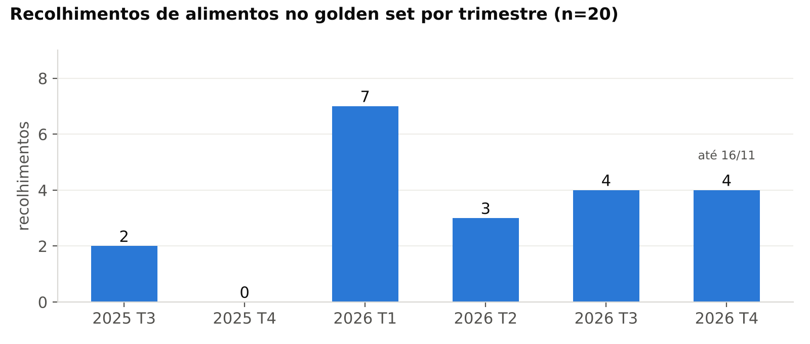
Hoje a triagem é manual — ler o comunicado, procurar o lote nas planilhas de recebimento de cada loja — ou a rede retira todos os produtos da marca, gerando desperdício. Do lado do consumidor, o alerta raramente chega a quem tem o produto em casa. Um caso real ilustra o risco de fontes não oficiais: um site publicou a ricota Vaidosa com lotes L2305A a L2308D, que não correspondem aos lotes da Anvisa.
| Público | Necessidade | O que a solução entrega |
|---|---|---|
| Cidadão / consumidor | Saber se a embalagem que tem em casa está em recall e o que fazer | Consulta por foto com resposta, orientação e link da fonte oficial |
| Responsável de qualidade da rede | Identificar as lojas afetadas e decidir com evidência | Painel com alerta, loja, regra aplicada, valores comparados e botão de aprovação |
Objetivo: construir uma POC que transforme o alerta oficial em decisão rastreável — da fonte à loja e à embalagem — sem delegar a decisão ao modelo de linguagem.
Hipótese: estruturar os alertas com IA generativa e cruzá-los com os recebimentos por regras determinísticas reduz o tempo de triagem e preserva a capacidade de explicar cada sinalização.
Princípio de projeto. O LLM só extrai. Quem decide é o motor de regras e uma pessoa. Na dúvida, a resposta é verificacao_pendente, porque um falso "sem recall" é o pior erro possível: o consumidor continuaria exposto a um produto que deveria ter sido retirado.
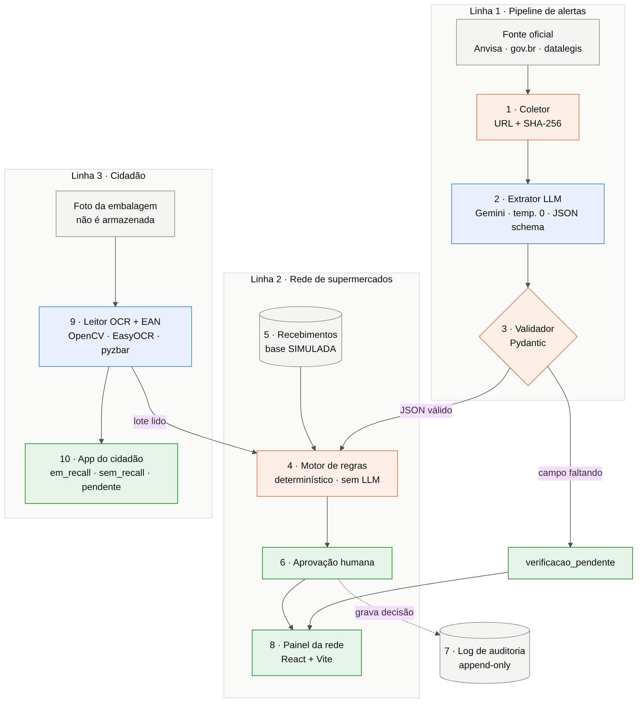
Estado de implementação (auditoria de 19/11/2026). A Figura 1 mostra a arquitetura-alvo; nem todos os componentes estão operacionais na POC:
| Classificação | Componentes |
|---|---|
| Implementado e validado | Extrator LLM (2), validador (3), motor de regras (4), aprovação humana (6), painel da rede (8), API do cidadão POST /cidadao/verificar |
| Implementado, experimental | Leitor da embalagem (9): nenhuma resposta conclusiva em fotos reais |
| Parcialmente implementado | Coletor (1): baixa os textos de avaliação, sem agendamento; contrato v2 do match; lista de alertas não vigentes (existe, mas não é lida) |
| Proposto como evolução | Interface do app do cidadão (10), base de recebimentos SQLite/Faker (5), log de auditoria append-only (7), persistência (a API guarda dados em memória) e deploy |
Um único backend FastAPI atende painel e cidadão pelos endpoints POST /alertas/coletar, GET /alertas, POST /motor/processar, GET /matches, POST /matches/{id}/decisao e POST /cidadao/verificar. Os componentes se comunicam por sete contratos JSON acordados pelo grupo antes da implementação (alerta extraído, recebimento, match, decisão humana, leitura da embalagem, resposta ao cidadão e evento de auditoria), o que permitiu aos quatro papéis trabalhar em paralelo.
| Camada | Tecnologia | Justificativa |
|---|---|---|
| Extração | Google Gemini gemini-3.5-flash-lite, SDK google-genai, temperatura 0, few-shot, saída restrita a JSON Schema | Texto livre → estrutura. Nulos explícitos no schema dão ao modelo uma saída válida para "não está no texto". Única variante com 100% de respostas nos testes de 17/11 (as versões Flash maiores retornaram 503/504) e a de menor custo |
| Validação | Pydantic v2 | Valida o contrato e recalcula as pendências: o LLM não consegue remover uma pendência |
| Decisão | Python puro | Determinístico, explicável e testável; mesma entrada, mesma saída |
| Visão computacional | OpenCV (CLAHE) + EasyOCR + pyzbar | Lote/datas por OCR e EAN por código de barras, tudo local: a foto não sai da máquina |
| API | FastAPI | Um backend para painel e app; validação e documentação OpenAPI automáticas |
| Front-end | React 19 + Vite | Painel com indicadores, evidência e aprovação |
| Qualidade | pytest | 228 testes automatizados: 194 da IA + 34 do backend (motor, cenários e cidadão) |
| Conjunto | Natureza | Volume | Uso |
|---|---|---|---|
| Levantamento de recolhimentos | Real — Anvisa, Prefeitura SP, datalegis | 27 recolhimentos | Dimensionar o problema |
| Golden set | Real, rotulado manualmente pela PO | 20 recolhimentos, 36 registros | Gabarito do extrator |
| Textos oficiais de avaliação | Real (Nestlé transcrita do PDF) | 20 textos | Entrada do extrator |
| Fotos de embalagens | Reais, próprias (18/11/2026), sem EXIF e sem pessoas | 12 fotos | Avaliação do OCR |
| Imagens da demo | Simuladas, com faixa "IMAGEM SIMULADA" e EAN fictício 200… | 3 imagens | Vídeo e teste do fluxo |
| Recebimentos das lojas | Simulados, marcados simulado: true | até 1.000 registros, 20 lojas | Cenários e escala |
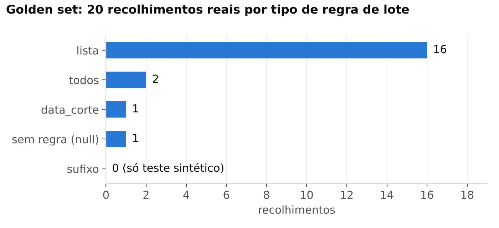
lista; sufixo só tem teste sintético.Tratamento. (i) Lote é sempre texto: normalização por strip + maiúsculas, preservando zeros à esquerda (07225288 ≠ 7225288), barras e pontos; (ii) só são aceitas fontes *.gov.br e datalegis.net; (iii) a divisão do golden set — 5 recolhimentos (10 registros) como exemplos do prompt e 15 reservados (26 registros) para avaliação — foi decidida antes de escrever o prompt, mantendo juntas as apresentações de um mesmo recolhimento e os recolhimentos que compartilham o mesmo texto; um teste automatizado falha se algum lote reservado aparecer no prompt.
Limitações. Amostra pequena e concentrada em lista; tipo sufixo sem caso real; base de recebimentos fictícia, que não representa o estoque de nenhuma rede; 12 fotos com variação limitada de iluminação e ângulo.
(a) Validador — o LLM não consegue retirar uma pendência (src/ia/schemas.py). Depois que o Gemini devolve o JSON, o Pydantic recalcula as pendências a partir do próprio conteúdo:
@model_validator(mode="after")
def _calcular_pendencias(self) -> "AlertaExtraido":
pendentes = list(dict.fromkeys(self.campos_pendentes))
def marcar(campo):
if campo not in pendentes: pendentes.append(campo)
for campo in ("produto", "marca", "cnpj"): # campos decisivos
if getattr(self, campo) is None: marcar(campo)
if self.cnpj is not None and not CNPJ_RE.match(self.cnpj): marcar("cnpj")
if self.escopo == "categoria_fabricante" and self.categoria is None: marcar("categoria")
if self.regra_lote.tipo is None: marcar("regra_lote.tipo")
... # lista sem lotes, sufixo vazio, data_corte sem data
self.status_extracao = "verificacao_pendente" if pendentes else "ok"
(b) Motor de regras — regra lista (src/backend/app/motor_regras.py). A identidade do produto (produto + CNPJ ou marca) é verificada antes do lote, porque o mesmo código aparece em produtos diferentes (ex.: 5321046041 = NAN 400 g e 800 g):
if tipo == "lista":
lote_recebimento = normalizar_lote(recebimento.get("lote"))
if not lote_recebimento: # lote ausente ou ilegível
return {"resultado": "verificacao_pendente", "motivos": ["lote"], "match": False, ...}
lotes_alerta = {n for lote in regra.get("lotes") or [] if (n := normalizar_lote(lote))}
encontrou = lote_recebimento in lotes_alerta
return {"resultado": "match" if encontrou else "sem_match", "match": encontrou,
"evidencia": {"campo": "lote", "valor_alerta": regra.get("lotes"),
"valor_recebimento": recebimento.get("lote")}}
(c) Extrator — nunca levanta exceção (src/ia/extrator.py). Falha de serviço, JSON inválido, fonte não oficial ou tempo esgotado (teto de 90 s) viram um alerta verificacao_pendente com o motivo (extracao:<motivo>), nunca um "sem recall". Retentativas: 429/500/503 → esperas de 2, 4 e 8 s; 504/timeout → modelo de fallback. CPF, e-mail e telefone são mascarados antes do envio.
| Tema | Controle implementado |
|---|---|
| Rastreabilidade (linhagem) | Todo alerta carrega fonte_url oficial e fonte_hash SHA-256; cada match traz a evidência (campo, valor do alerta, valor do estoque); a decisão humana registra responsável e horário e não pode ser sobrescrita (HTTP 409) |
| Privacidade (LGPD, art. 6º — finalidade e necessidade) | Foto processada só em memória e localmente; não é salva, logada nem enviada ao LLM (teste automatizado falha se a leitura gravar arquivo). Texto bruto do OCR não é registrado |
| Limites do LLM | Temperatura 0, saída em schema, sem poder de decisão, fonte citada em cada extração, prompt versionado (extracao_v1) |
| Fonte incorreta | Somente domínios oficiais; fonte não oficial gera lista vazia |
| OCR incerto | Limiar de confiança 0,8; sem EAN legível o produto não é identificado → pendente |
| Dado de base simulado | Todo registro fictício leva simulado: true e está identificado nos READMEs e neste PDF |
Matriz de riscos (resumo da PO). Riscos críticos: fonte incorreta ou conflitante; extração que inventa, omite ou altera valor; OCR ilegível ou identificação ambígua; erro de cruzamento do lote ou do limite de data; foto com dados pessoais. Riscos altos: ação sem revisão ou trilha de auditoria; viés e cobertura limitada da amostra; interpretação excessiva de sem_recall. Cada risco tem controle e forma de verificação definidos em data/Nota_de_Produto_e_Matriz_de_Riscos.md.
Vieses. O gabarito concentra-se em lotes listados e em produtos de grandes marcas; o desempenho em formatos raros (sufixo, PDFs escaneados) não está comprovado. As fotos foram tiradas por uma pessoa, com um celular, em ambiente doméstico; outras condições de luz e embalagens curvas tendem a reduzir a leitura.
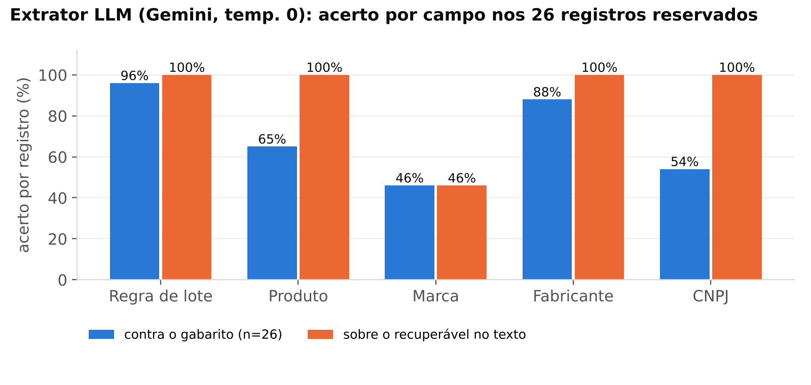
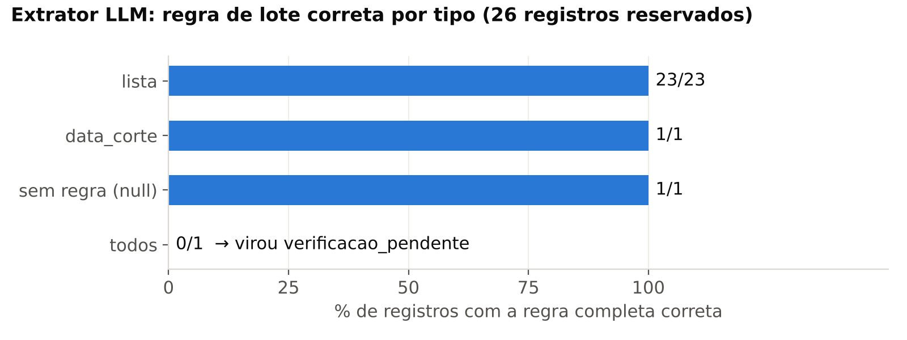
| Indicador | Resultado | Leitura |
|---|---|---|
| Regra de lote completa (tipo + lotes/data) | 25/26 (96%) | O único erro (Equaliv, todos) terminou em verificacao_pendente |
Por tipo: lista · data_corte · null | 23/23 · 1/1 · 1/1 | todos: 0/1; sufixo: sem caso real |
| Falsos "sem recall" | 0 | Nenhuma divergência levou a uma resposta conclusiva errada |
| Alucinações (11 alertas não rotulados) | 0 | Todos sustentados por trecho literal do texto |
| Registro totalmente correto | 5/26 (19%) · 12/26 (46%) sobre o recuperável | 25 dos 39 erros de identidade são valores ausentes do texto (a PO completou com a resolução); erros reais concentram-se em marca (14) |
| Cenário | Entrada (simulada) | Esperado | Observado |
|---|---|---|---|
1 · Vaidosa · lista | Loja A lote 153; Loja B lote 154 | A: match → confirmado; B: sem match | ✔ A aguardando_aprovacao → confirmado (qualidade.loja03); nova decisão → 409; B sem_match |
2 · Sanibras · data_corte | Fabricação 12/06 × 13/06/2026 | A: match (dia limite incluso); B: sem match | ✔ evidência data_fabricacao 2026-06-12 |
| 3 · Vaidosa · lote ilegível | Lote vazio e null | verificacao_pendente com ["lote"] | ✔ nenhum match conclusivo |
| Escala | 1.000 recebimentos, 20 lojas | 501 matches; 126 pendentes | ✔ 501/501; 126/126; ≈ 0,1 s (mediana de 10 execuções) |
| 2b · Sanibras com nome comercial | "Whey Protein 900 g", mesmo CNPJ, categoria suplemento | match por fabricante + categoria | ✔ corrigido em 19/11 (antes: falso negativo) |
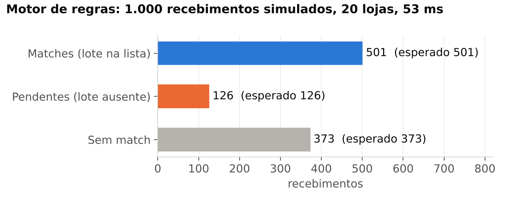
categoria_fabricante (auditoria de 19/11)A auditoria encontrou dois caminhos para um falso "sem recall" quando o alerta abrange uma categoria inteira de um fabricante (ex.: "todos os suplementos da Sanibras fabricados até 12/06/2026"): (i) o motor comparava o nome do produto e recusava "Whey Protein 900 g"; (ii) o endpoint do cidadão respondia sem_recall para essa embalagem. A identidade passou a ser fabricante (CNPJ ou razão social) + categoria, preservando a regra de data; sem esses dados, a resposta é verificacao_pendente. Os seis testes novos falham no código original e passam no corrigido.
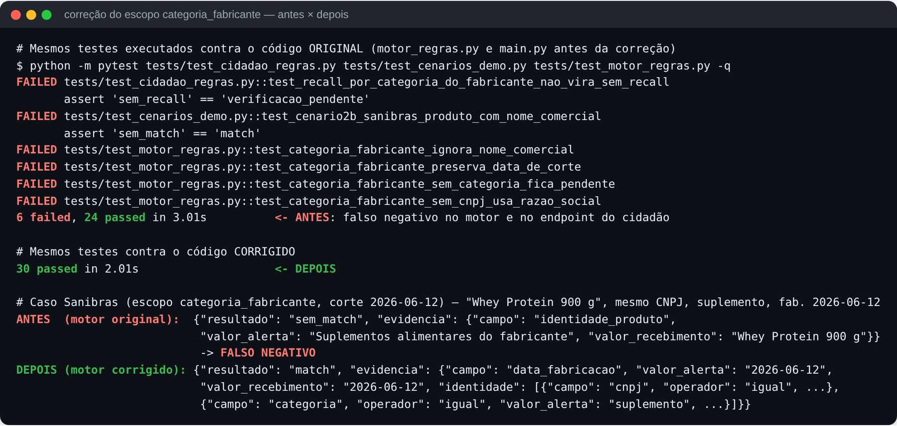
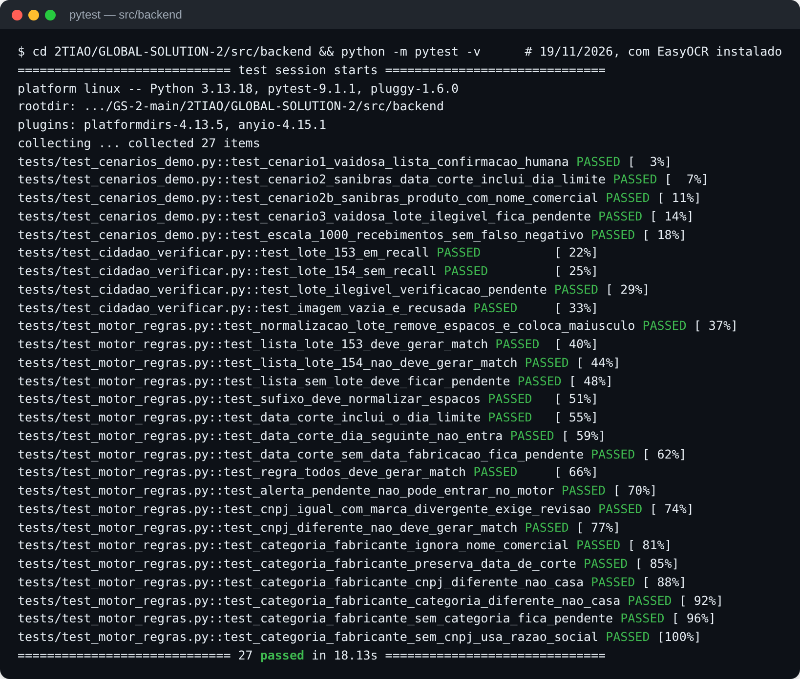
Com o backend em execução e o alerta oficial da Vaidosa carregado, as imagens foram enviadas a POST /cidadao/verificar. Além do código HTTP, conferiu-se se o resultado está semanticamente correto.
| Imagem | Tipo | Esperado | Obtido |
|---|---|---|---|
| demo_vaidosa_153.png | simulada | em_recall | ✔ em_recall (lote 153, confiança 0,99) |
| demo_vaidosa_154.png | simulada | sem_recall | ✔ sem_recall |
| demo_ilegivel.png | simulada | verificacao_pendente | ✔ pendente (lote) |
| foto03, foto09, foto10, foto11 | reais | verificacao_pendente | ✔ pendente (produto fora do catálogo da POC ou lote ilegível) |
| imagem vazia | — | HTTP 400 | ✔ HTTP 400 |
Nenhuma foto real gerou resposta conclusiva, e nenhum arquivo de imagem foi gravado no servidor. A interface do aplicativo do cidadão não está operacional: a pasta src/app-cidadao ainda replica o painel; a validação foi feita pela API e pela documentação interativa (Swagger).
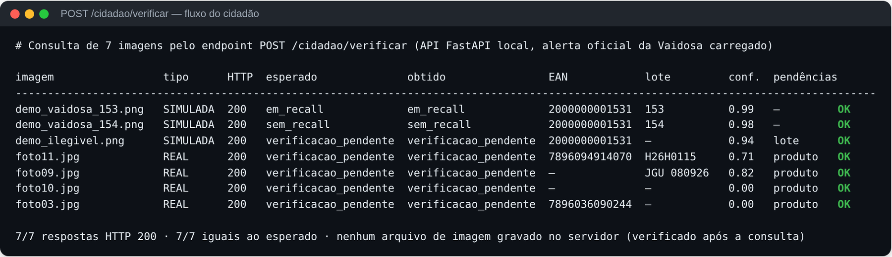
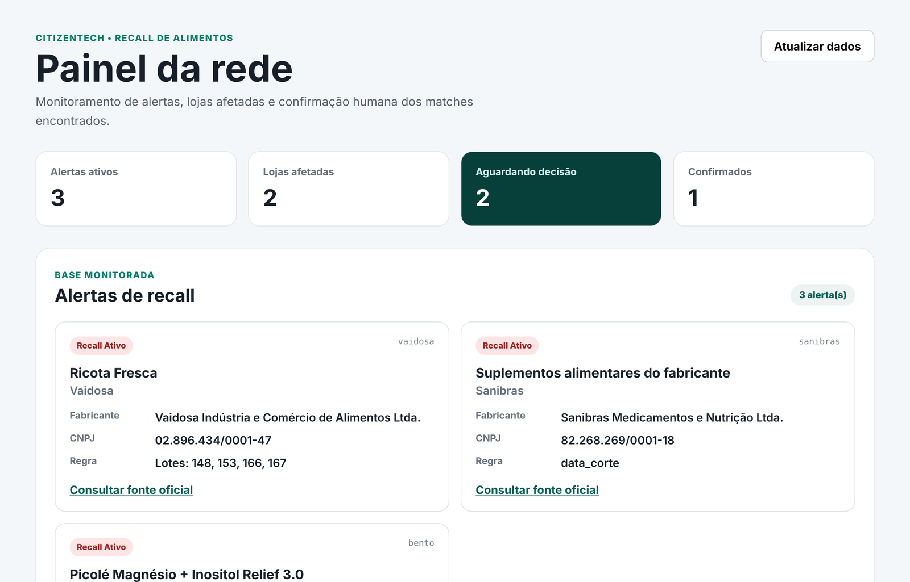
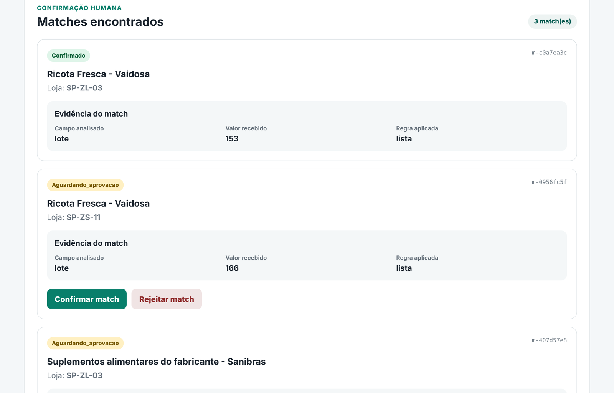
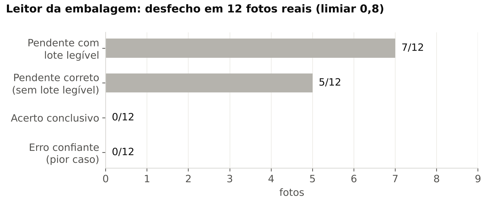
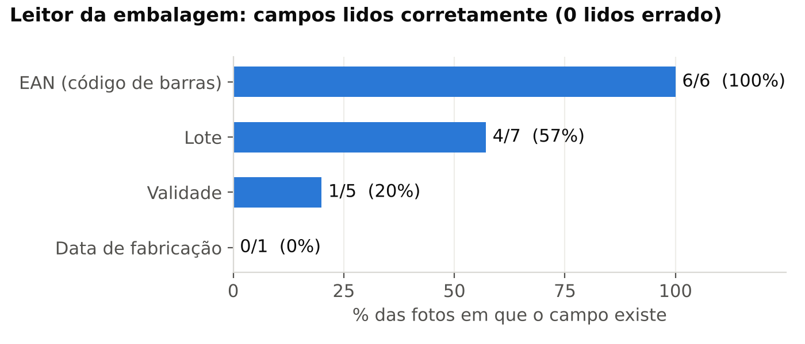
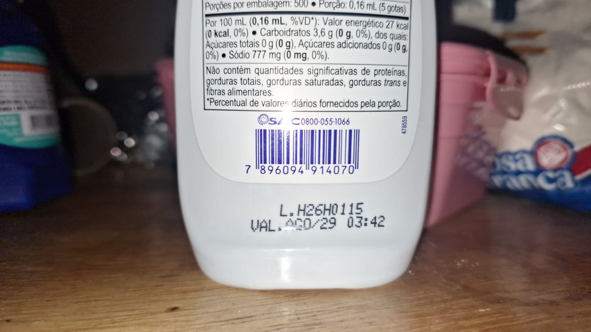
H26H0115 e EAN lidos; confiança 0,69 → pendente.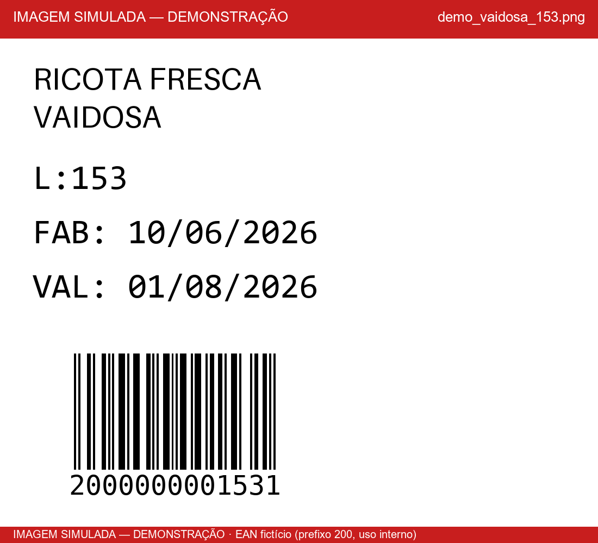
em_recall.A solução contribui para a meta 3.d — reforçar a capacidade de alerta precoce, redução e gerenciamento de riscos à saúde — ao encurtar o caminho entre o alerta sanitário oficial e a retirada do produto da loja e da casa do consumidor.
| Indicador | Como medir | Valor na POC | Meta em piloto |
|---|---|---|---|
| Acerto da regra de lote extraída | Regras corretas ÷ alertas avaliados, por tipo | 96% (25/26) | ≥ 95%, com revisão humana |
| Falsos "sem recall" | Pares alerta–recebimento afetados classificados como "sem recall" | 0 | 0 |
| Tempo de triagem | Cronômetro: fluxo manual × automatizado, mesmos alertas e lojas | Automatizado: ≈ 0,1 s / 1.000 recebimentos (mediana); manual: a medir | Redução ≥ 90% |
| Lojas com ação confirmada em 24 h | Matches confirmados ≤ 24 h ÷ matches gerados | — | ≥ 90% |
| Consultas do cidadão conclusivas | Respostas em_recall/sem_recall ÷ consultas | 0/12 fotos reais | ≥ 60% com guia de enquadramento |
Medir unidades que deixaram de ser vendidas ou consumidas — e, mais adiante, efeitos em saúde — exige um piloto com uma rede real e dados de operação, o que está fora do escopo desta POC e é declarado como limitação.
A POC confirmou que a IA generativa é útil exatamente na etapa em que os alertas são heterogêneos — transformar texto oficial em uma regra estruturada — e que é possível usá-la sem entregar a decisão ao modelo. O desenho "LLM extrai, regras decidem, pessoa aprova", com o estado verificacao_pendente como rede de segurança, produziu zero falsos "sem recall" em todas as etapas avaliadas — extração, cruzamento e leitura da embalagem — após a correção de 19/11 do escopo categoria_fabricante, que eliminou um falso negativo encontrado na auditoria.
Aprendizados. (1) Separar exemplos e reservados antes de escrever o prompt evitou métricas infladas; (2) reportar "contra o gabarito" e "sobre o recuperável" separou erro do modelo de informação ausente no texto; (3) a identidade do produto precisa vir antes do lote; (4) num contexto de saúde, um leitor de OCR conservador é preferível a um confiante.
Testes. 228 testes automatizados (194 da IA + 34 do backend). Três falhas conhecidas são de ambiente, não de lógica: um teste depende de um commit do histórico do repositório anterior, e dois redesenham as imagens da demo com uma fonte indisponível no ambiente de verificação.
Limitações e próximos passos.
categoria_fabricante (caso Sanibras com nome comercial) passou a ser tratado por fabricante + categoria, com verificacao_pendente quando um deles falta.POST /cidadao/verificar) e guiar o enquadramento (lote + EAN no mesmo quadro, correção de rotação).sufixo; cronometrar o fluxo manual.Dataset_Recall_Anvisa.xlsx; Golden_Set_Recall.json.docs/resultados_extracao.md, docs/resultados_ocr.md, docs/evidencias_testes.md, docs/arquitetura.md.| Vídeo (YouTube, não listado) | https://youtu.be/2S1gYwfXBZM |
|---|---|
| Repositório GitHub (privado, compartilhado com fiap-tutoria) | https://github.com/Carlos566487/GLOBAL_SOLUTION_2026_2 |